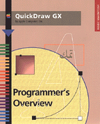

QuickDraw GX
Programmer's Overview
Inside Macintosh: QuickDraw GX Programmer's Overview gets you started programming with QuickDraw GX. This book introduces the universe of QuickDraw GX: object architecture, graphics, typography, printing features, run-time, and debugging environments.
The first part of this book presents an overview of QuickDraw GX and introduces the objects, data structures, and functions you use to include QuickDraw GX imaging capabilities in your application. The second part of this book contains programming examples in the form of code recipes with specific, step-by-step instructions for implementing some of the more commonly used features of QuickDraw GX. These recipes show you how to
- set up the QuickDraw GX environment
- use QuickDraw GX with Macintosh windows
- allow users to create and edit graphics shapes
- handle text selection and editing
- print documents using the new printing features
Availability: Click below to obtain Inside Macintosh: QuickDraw GX Programmer's Overview in any of the following formats.

|
Acrobat (8224K) |